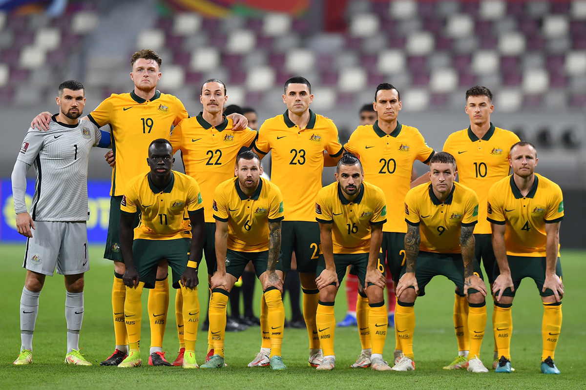

Ranking FIFA: 38° (octubre 2022).
¿Cómo se clasificó al Mundial? Le ganó el Repechaje intercontinental a Perú.
Rendimiento en 2021 (G-E-P): 7-2-1 (21 GF, 5 GC, +16).
Rendimiento en 2022: 5-2-2 (13 GF, 7 GC, +6).
M. Ryan; N. Atkinson, B. Wright, Krowles, A. Behich; A. Mooy; M. Boyle, A. Hrustic, J. Irvine, C. Goodwin; M. Leckie.
Nacionalidad: australiano.
Edad: 58 años.
Contratado: julio de 2018.
Récord en el cargo (G-E-P): 21-4-6.
Títulos en el cargo: -
Victoria más notable: 5-4 en penales vs. Perú por el Repechaje a Qatar 2022.
1930 Uruguay -
1934 Italia -
1938 Francia -
1950 Brasil -
1954 Suiza -
1958 Suecia -
1962 Chile -
1966 Inglaterra -
1970 México -
1974 Alemania 14°
1978 Argentina -
1982 España -
1986 México -
1990 Italia -
1994 Estados Unidos -
1998 Francia -
2002 Corea y Japón -
2006 Alemania 16°
2010 Sudáfrica 21°
2014 Brasil 30°
2018 Rusia 30°
